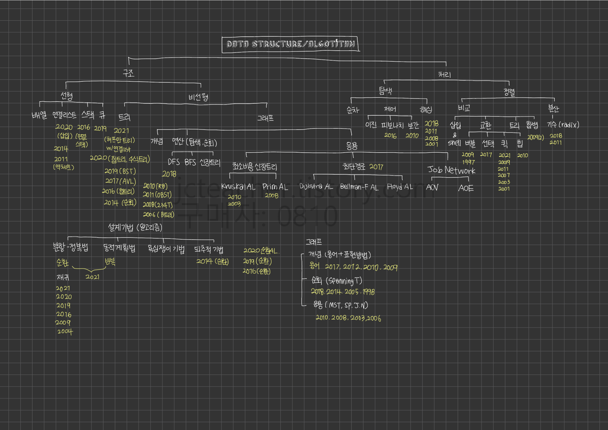
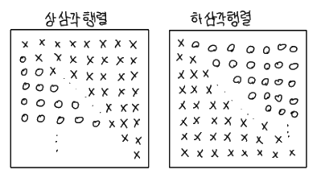
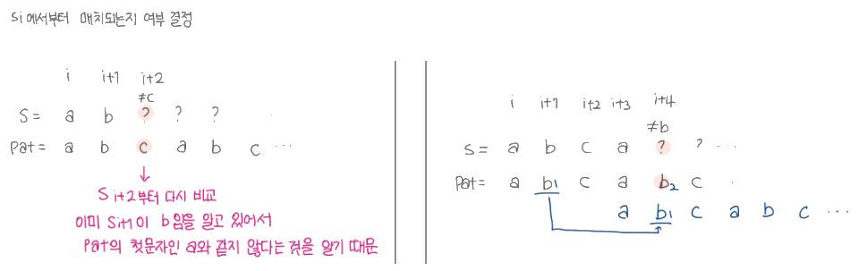
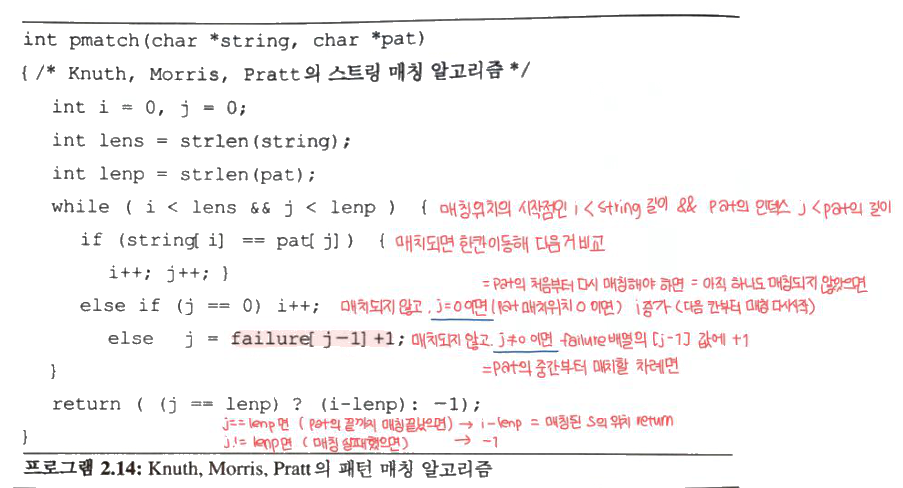
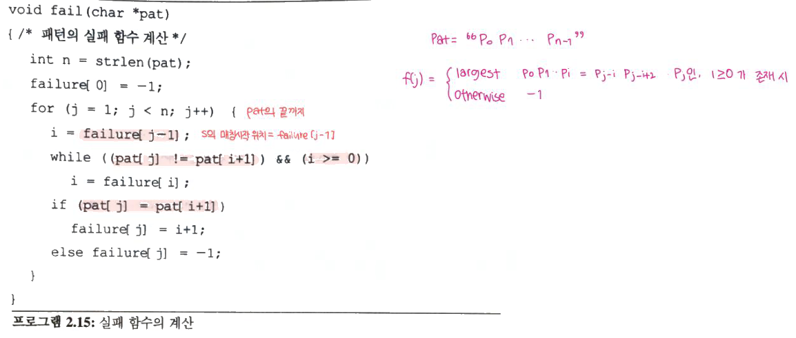
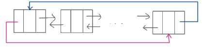

1.1.2
순차 데이터 구조 & 연결 데이터 구조
- └배열의 개념, 배열의 응용 (희소행렬, 문자열)
순차 데이터 구조 & 연결 데이터 구조
- 자료구조 : 데이터를 저장하는 법을 연구하는 학문
- 선형 (1:1) : 앞 데이터와 뒤 데이터를 차례로 연계해서 저장
- 선형 리스트(배열) : 단점) 삽입, 삭제에 불리 (∵ 원소의 이동이 많아 수행 시간이 길어지기 때문)
- 연결 리스트 : 단점) 시간이 오래 걸림, 코드가 복잡
- 스택, 큐, 데크
- 비선형 (n:n) : 선형이 아닌 다른 구조
- 자료구조·알고리즘 전체 지도 : 과목 구조와 기출 연도 (손그림)

- 선형 리스트 (순차 리스트)
- 개념 : 원소들 간의 논리적 순서 = 메모리에 저장하는 물리적 순서
- 장점
- ① 접근 속도·탐색이 빠름 (논리 순서와 물리 순서가 같아서)
- ② 알고리즘이 간단
- 단점
- ① 원소 개수가 많음 (연결리스트와 비교했을 때)
- ② 삽입·삭제가 빈번할 경우 오버헤드가 큼
- ③ 초기에 배열 크기를 정해 두고 일부만 사용(메모리 낭비)하거나 오버플로우 발생
- 선형리스트 vs 연결리스트
| 선형리스트 | 연결리스트 |
|---|
| ① 논리순서 = 물리순서 | ① 논리순서 ≠ 물리순서 |
| ② 연속된 공간에 저장 | ② 임의의 위치에 저장 |
| ③ 정적 메모리 할당 | ③ 동적 메모리 할당 |
| ④ 데이터 탐색 빠름 (인덱스로 지정하기 때문; O(1)) | ④ 항상 첫 노드를 가리키고 있어 찾을 때까지 탐색; O(n) |
⑤ 삽입·삭제 시 효율성↓ O(n)
(연속 공간이므로 삽입 후 나머지 데이터를 한 칸씩 이동하거나, 삭제 시 한 칸씩 당겨 와야 함) | ⑤ 임의의 노드만 안다면 삽입·삭제 효율↑ O(1) |
- 배열 (array) : 연속된 기억 장소를 차지하는 같은 데이터형들의 집합 (가장 일반적, 단순)
- 특징
- ① 정적인 데이터형 (∵ 소스코드에서 반드시 크기를 정해 두어야 함)
- ② 동일한 데이터형
- ③ 인덱스가 정의되어 데이터와 매핑된 쌍의 집합
- ④ 배열에 사용되는 첨자의 수에 따라 1, 2, 3차원 배열 등으로 구분할 수 있음
- 장점 : 정해진 시간에 원소를 빠르게 찾을 수 있음
- 단점
- ① 임의의 원소 삽입·삭제 시 많은 양의 원소 이동
- ② 기억 장소의 낭비 초래
- ③ 자료의 크기가 배열의 크기에 제약 받음
- 선언 예
int a[size]; // 정적 배열
int b[ ]; // 컴파일 오류 발생
int c[ ] = {1,2,3}; // 초깃값이 있어 오류 X
int d[3][3]; // 2차원 배열 |
- 행렬
- 정방 행렬 : 행과 열의 수가 같은 행렬
- 전치 행렬 : 행과 열을 바꾼 행렬
- 희소 행렬 : 행렬의 원소에 비교적 0이 많은 행렬 ('0이 많다'의 정확한 기준은 없음)
- 2차원 배열로 표현하면 공간 낭비 발생 → ∴ 0이 아닌 원소만 저장하는 방법을 쓰면 효율↑
- m원 대각 행렬 : m개의 대각선(X로 표시된 부분)만 값을 가지고 나머지는 0으로 채워진 행렬
- 상 삼각행렬 : 정방 행렬의 대각선 아래 모든 원소가 0일 때
- 하 삼각행렬 : 정방 행렬의 대각선 위 모든 원소가 0일 때

- 희소 행렬의 전치
- ① 그대로 뒤집으면 오름차순 정렬이 안 됨 → 재정렬 필요
- ② 열 우선으로 재정렬 (①을 개선)
- ③ 빠른 전치 : 열마다 원소 개수를 세서 전치 행렬의 각 행이 시작할 인덱스를 미리 배정
- rowTerms[i] : 전치 행렬의 행 i(= 원래 행렬의 열 i)에 들어갈 원소 수
- startingPos[i] : 전치 행렬에서 행 i 가 시작하는 위치 = startingPos[i−1] + rowTerms[i−1]
- b[0] 에는 행 수·열 수를 서로 바꿔 넣고, 원소 수는 그대로 넣음

- 스트링 – 패턴 매칭 : 주어진 문자열(string)에 찾고자 하는 문자열(pat)이 있는지 검사
- ① 순차 검사 : O(m·n)
- ② nfind : 나머지 문자들을 검사하기 전에 pat 와 string 의 첫 번째·마지막 문자를 먼저 검사 → O(m), 하지만 최악인 경우 여전히 O(m·n)
- ③ KMP (Knuth, Morris, Pratt)
- string = S0 S1 … Sm-1, pat = "a b c a b c a c a b"
- 패턴 내 문자들을 알고, S 의 문자와 매치되지 않는 패턴 내 위치를 알아냄으로써 S 내에서 후진하지 않고 패턴 내 어느 위치부터 탐색을 계속할지 결정할 수 있음

- 실패 함수 : pat = p0 p1 … pn-1 일 때, f(j) = p0 p1 … pi = pj-i pj-i+1 … pj 를 만족하는 가장 큰 i (i ≥ 0 인 것이 있을 때), 없으면 −1


- 연결 리스트 : 링크를 가진 노드들의 순열
- 장점 : ① 노드의 삽입·삭제 용이 ② 메모리의 동적 관리
- 단점
- ① 밀도가 선형 리스트보다 낮음 (포인터를 저장할 기억 장소가 필요해서)
- ② 특정 노드 접근 시간이 많이 걸림 (포인터가 항상 처음을 가리키기 때문)
- 선형(단순) 연결 리스트
- ① 연결 리스트의 시작점을 가리키는 포인터가 그 리스트의 이름이 됨
- ② 구조가 간단하고 기억 장소의 소모가 적음
- ③ 이전 노드·역방향으로 탐색 X (별도의 포인터 필요) → 접근 용이성↓ (임의의 노드에서 모든 노드로의 접근) → 환형 연결리스트 사용
- ④ 삽입·삭제 알고리즘 복잡 (이전 노드를 몰라서)
- 이중 연결 리스트
- 장점 : ① 노드 검색 시 속도가 빠름 (양방향 검색 가능) ② 한 노드의 포인터가 파괴되었을 때 복구 가능
- 단점 : 두 개의 링크를 저장할 기억 공간 낭비
- 노드 구조 : left-link | item | right-link
typedef struct node *node_pointer;
typedef struct node {
node_pointer left_link; // = struct node *left_link;
int item;
node_pointer right_link;
}; |
- 환형(원형) 연결 리스트 : 마지막 노드가 널 링크 대신 리스트의 처음 노드의 포인터를 가짐
- 장점 : ① 어느 한 노드로부터 다른 모든 노드에 접근할 수 있음 ② 임의의 노드 검색 시 첫 노드부터 찾지 않고 현재 노드부터 검색할 수 있음 (특히 결합·분리 작업에 효율적)
- 단점 : ① 노드 검색 시 무한 루프에 빠질 수 있음 (head node 를 두어 무한 루프 제거) ② 삽입·삭제 알고리즘 복잡, 수행 시간↑ (∵ 역방향 탐색이 안 되기 때문)
- 이중 환형 연결 리스트 : 이중 연결 리스트에서 마지막 노드의 RL 은 첫 노드를, 첫 노드의 LL 은 마지막 노드를 가리킴
- 장점 : ① 마지막 노드까지 데이터가 저장되었을 때 빈 노드를 찾아 입력할 수 있도록 융통성 부여 ② 무한 루프에 빠지는 것을 방지할 수 있음
- 단점 : 알고리즘의 구현이 매우 복잡
